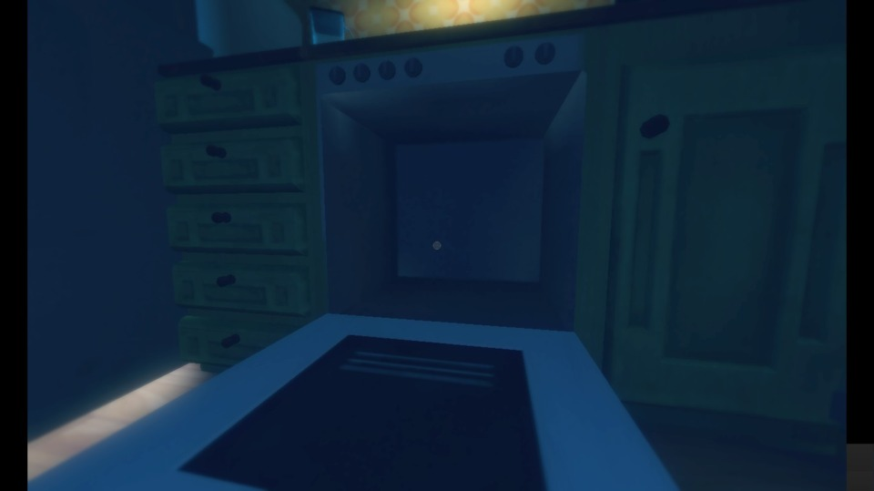
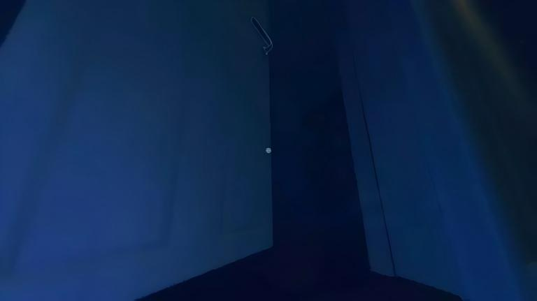

The Nursery
Waking Up in the Nursery
The game opens with one of the most quietly unsettling introductions in horror gaming. You are a two-year-old child. You don't know where your mother has gone. All you know is that the crib you're standing in feels wrong — too tall, too dark, and far too quiet. A sliver of pale moonlight cuts through the window blinds, painting long shadows across the nursery floor. This is the only light you have to work with, and it is not nearly enough.
From a gameplay perspective, Chapter 1 is a tutorial level wrapped in thick atmosphere. It teaches you the core mechanics — walking, grabbing objects, climbing, and most importantly, using Teddy — without ever breaking character. There are no HUD elements, no floating button prompts. Just you, a toddler's perspective, and a room that feels impossibly large.
Getting Out of the Crib
Your first task is straightforward: escape the crib. Walk to the edge of the crib and look for the section where the railing dips slightly lower — this is the game's way of guiding you without words. On PC, use WASD to move. On console, use the left analog stick. The toddler's movement is appropriately clumsy — your steps are short, your balance feels precarious, and that's by design. Don't fight it. Lean into the awkwardness. It's part of what makes the experience work.
Once you approach the low railing, a brief climbing animation plays automatically and you'll tumble — gently — onto the nursery floor. The thud is soft but resonant. You're out. The room opens up around you, and the real exploration begins.
If you hold the crouch button (Ctrl on PC, B/Circle on console), the toddler drops to a crawl. While you won't need this much in Chapter 1, it becomes essential in later chapters for squeezing through tight vents and under furniture. Try it out now to get a feel for the controls — there's no penalty for experimenting.
Picking Up Teddy
Teddy is sitting on the floor near the crib. You genuinely cannot miss him — the game uses subtle visual cues (a faint warm glow around the bear, plus the fact that he's the only brightly colored object in the room) to draw your eye. Walk over to Teddy and use the interact button (E on PC, X/Square on console) to pick him up.
This is the most important mechanic in the game. Teddy is your companion, your comfort object, and your light source all rolled into one. When you hold Teddy close (hold the interact button or the dedicated hug button), the world brightens slightly. The darkness recedes. Your movement steadies. More importantly, Teddy emits a soft golden glow that highlights nearby interactive objects — drawers, doors, items you can pick up. If you ever feel lost or the screen gets too dark to navigate, hug Teddy. That's not flavor text. That's a genuine gameplay hint you'll carry through the entire game.
Throughout the entire game, Teddy's glow intensifies when you're near something important. If you find yourself in a dark room unsure of where to go next, hold Teddy close and slowly rotate the camera. The direction where Teddy shines brightest is almost always the direction you need to head. This is never explicitly explained in the game, but it's consistent across all five chapters.
Finding the Key
With Teddy in your arms, the nursery no longer feels quite as overwhelming. Now the real puzzle of the chapter begins: finding the key that unlocks the nursery door. The key is sitting on top of a tall cabinet across the room — far out of reach for a toddler. You'll need to explore the environment and use what's available to bridge that height gap.

Explore the Interactive Objects
Before we solve the key puzzle, let's tour everything in the nursery that you can interact with. Some of these trigger memory fragments — brief, distorted flashbacks that hint at the story to come. Others are just environmental dressing, but they do a fantastic job of building the world. Here's what you'll find:
- The Music Box — Sitting on a low shelf near the crib. Interact with it and it plays a few notes of a lullaby before winding down with a discordant click. The melody is haunting and will recur throughout the game. This triggers your first memory fragment: a distorted image of a woman's face, half-remembered and already fading.
- The Building Blocks — Scattered on the floor near the play area. You can knock them over by walking into them, which is weirdly satisfying. They spell nothing in particular, but the physics are fun to play with and it's a good way to get comfortable with how objects react to your presence.
- The Rocking Chair — In the corner of the room, a wooden rocking chair sits motionless. If you interact with it, the chair rocks gently for a few seconds… and then stops abruptly. Something about the way it halts feels intentional. Keep this chair in the back of your mind. You'll see one very much like it in a later chapter.
- The Wardrobe — Against the wall opposite the crib stands a tall wooden wardrobe. The doors are closed. You can open them. Inside you'll find hanging clothes at a giant's scale… and, tucked in the back, the chapter's hidden collectible drawing. More on that in the dedicated section below.
- The Tall Cabinet — This is your destination. The cabinet towers over you. On top of it, just barely glinting in the moonlight, is the nursery key. You can't reach it from the floor.
Throughout the game, interacting with certain objects triggers brief, vignette-style memory fragments — usually a few seconds of distorted visuals and muffled audio. These are not required to complete the game, but they add significant depth to the story. If you're interested in the narrative, seek them out. There are roughly 3–5 per chapter, and Chapter 1 has two: the music box and the wardrobe.
Step-by-Step: Getting the Key
Here's exactly what you need to do:
- Locate the small wooden chair. It's near the play area, not far from the building blocks. It's child-sized — just right for a toddler to push.
- Push the chair to the tall cabinet. Walk into the chair to push it. The physics can be a little floaty (you are a two-year-old, after all), so be patient. Line the chair up with the front of the cabinet. It doesn't need to be perfectly flush — close enough will do.
- Climb onto the chair. Walk up to the chair and the game will automatically trigger a short climbing animation. You're now standing on the chair, significantly higher than before. Your perspective shifts — suddenly the top of the cabinet is within reach.
- Grab the key. Look up toward the top of the cabinet. The key will have a subtle interaction highlight. Use the interact button to grab it. The toddler's hand reaches up, the key is taken, and a soft musical sting confirms you've solved the puzzle.
If you're pushing the chair and it doesn't seem to want to climb, try approaching the chair from different angles. The climbing trigger zone is on the front face of the chair, roughly centered. If you're coming at it from the side, the game might not register the climb prompt. Approach from directly in front and walk into it — that works every time.
Unlocking the Door
Key in hand. The nursery door is directly across from the crib — you've been looking at it this whole time. Walk over to it and interact. The toddler stretches up on tiptoes (it's an endearing animation, considering the circumstances), the key slides into the lock, and with a heavy clunk, the door swings open.

Beyond the door: a dark hallway. You can see perhaps ten feet ahead before the shadows swallow everything. There's no going back — the nursery door closes behind you automatically, and the hallway stretches forward. Chapter 1 ends the moment you step across the threshold.
Take a breath. Hug Teddy. And step into the dark. Chapter 2 awaits.
Hidden Collectible — Nursery Drawing
Each chapter of Among the Sleep contains at least one hidden collectible: a child's drawing, scribbled in crayon, depicting scenes that are equal parts innocent and deeply unsettling. Collecting all of them is required for 100% completion and is tied to the secret ending. Chapter 1 has one drawing, and here is how to find it.
Location: Inside the Wardrobe
The wardrobe is the large wooden piece of furniture against the wall opposite the crib. It has two tall doors. Approach the wardrobe and interact with the doors to swing them open. Inside, you'll see hanging clothes — adult-sized garments that loom over you, swaying slightly as if someone just brushed past them. Creepy? Absolutely. But don't let that stop you.
Look at the back wall of the wardrobe. Tucked behind the hanging clothes, near the bottom (at toddler eye-level, conveniently), is a piece of paper taped to the wood. The drawing is crude — a crayon sketch of a house with one window glowing yellow. A stick figure stands outside. The perspective is childlike, but the emotional weight of the image is immediate. Interact with it to collect the drawing.
Once collected, the drawing is added to your inventory/journal. You can view collected drawings from the pause menu at any time. There are multiple drawings across the full game, and finding them all rewards you with the secret ending — so it pays to be thorough starting right here in Chapter 1.
We recommend grabbing the drawing before you push the chair to the cabinet. The reason is simple: once you have the key and unlock the door, it's very easy to walk through and trigger the chapter transition without thinking. Then you'd have to replay the chapter to get the collectible. Grab it early, then solve the key puzzle — that way you can walk through the door with zero regrets.
Tips & Notes
Before you move on to Chapter 2, here are a few closing thoughts and observations that will serve you well throughout the rest of the game:
- The darkness is not your enemy. It's easy to feel frustrated when you can't see clearly, but Among the Sleep uses darkness intentionally. It's a storytelling tool. If you can't see what's ahead, it's often because the game doesn't want you to see it yet. Hug Teddy, take small steps, and trust the design.
- Interact with everything. This isn't a game where you need to conserve resources or worry about triggering bad outcomes by touching things. There's no fail state in Chapter 1 — you can't die, you can't get a game over, and you can't lock yourself out of progress. So push every chair, open every drawer, and touch every object. The worst that can happen is you'll discover something interesting.
- This is the calm before the storm. Chapter 1 is intentionally gentle. The horror elements ramp up significantly starting in Chapter 2. Enjoy the relative safety of the nursery while it lasts — you'll miss it later.
Among the Sleep Mobile (releasing June 2, 2026 for iOS and Android) features identical content to the PC and console versions, but the control scheme is tailored for touchscreens. Here's what to expect in Chapter 1 on mobile:
- Virtual joystick on the left for movement, with a dedicated hug button (Teddy icon) positioned on the lower right. The layout is clean and unobtrusive — Krillbite did an excellent job with the mobile port.
- Double-tap to interact replaces the single-button press from PC/console. For the wardrobe doors, double-tap directly on the door handles. For grabbing the key, double-tap on the key itself once you're on the chair.
- Performance on mobile is smooth (targeting 60fps on modern devices), but the nursery's heavy shadows can look slightly compressed on older phones. If the wardrobe interior appears too dark to see the drawing, try adjusting your device brightness — the collectible is there, we promise.